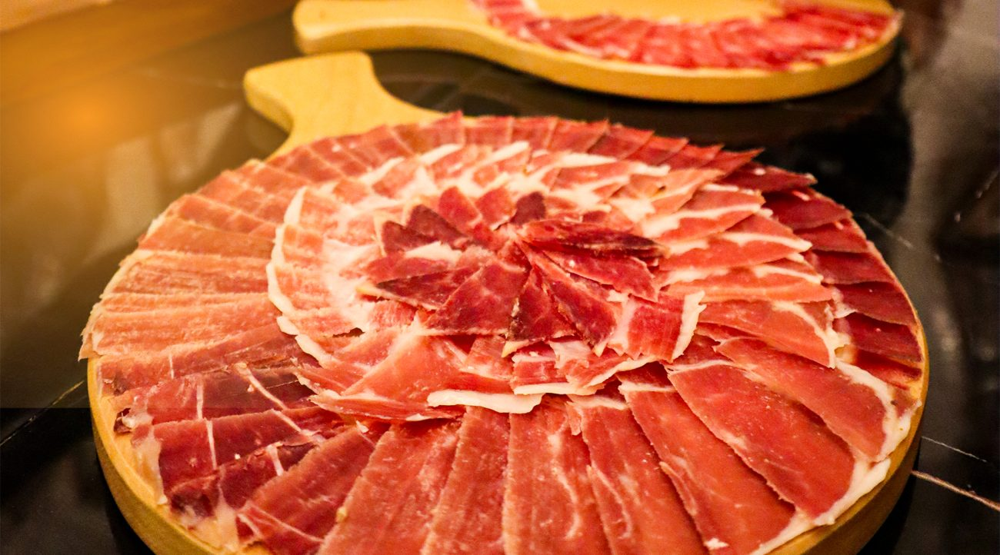

Nuestros Productos

Café Andino
Aroma intenso y sabor único, cultivado en las alturas de los Andes.
Queso Artesanal
Elaborado con tradición y calidad, perfecto para acompañar tus comidas.

Jamón Serrano
Curado naturalmente, con el sabor auténtico de la sierra.